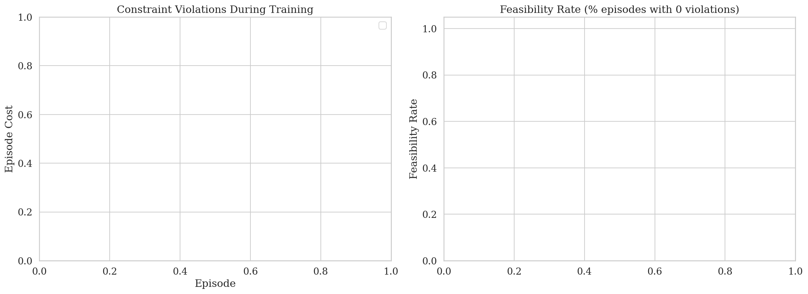
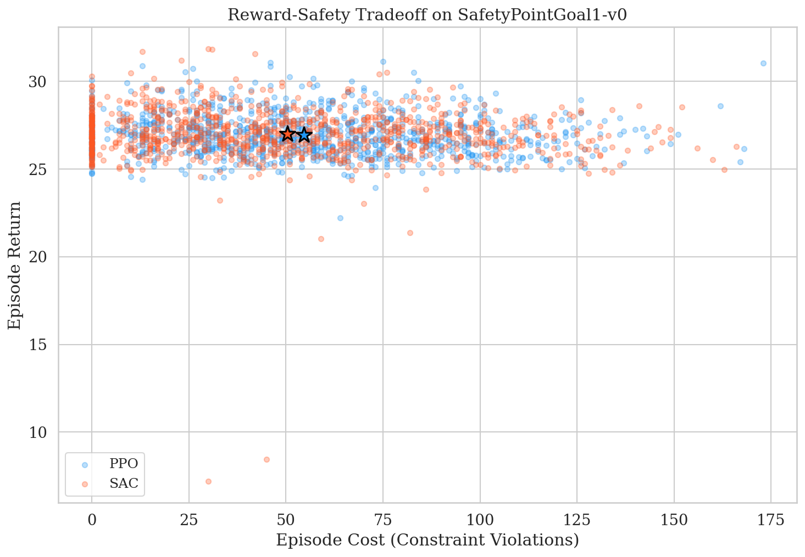
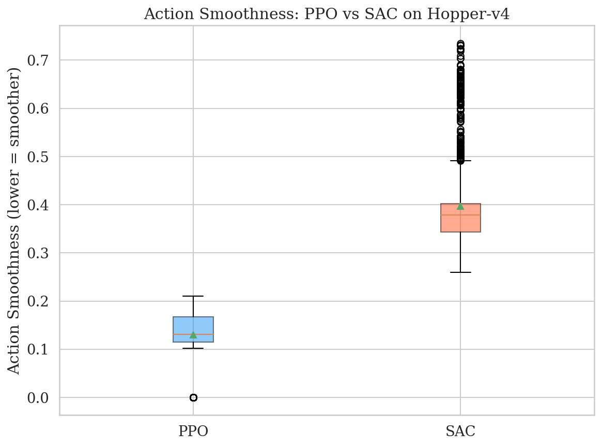
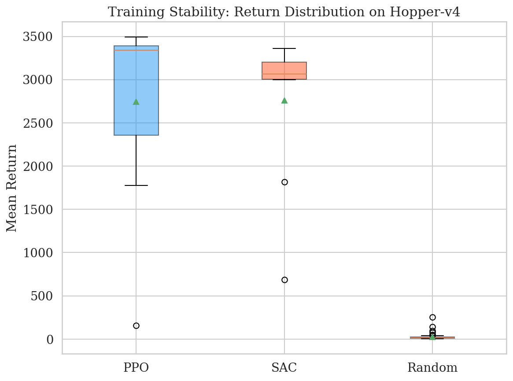
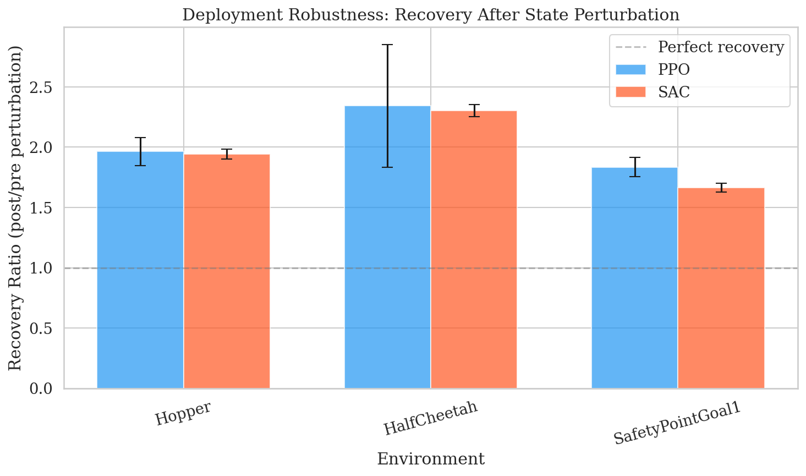
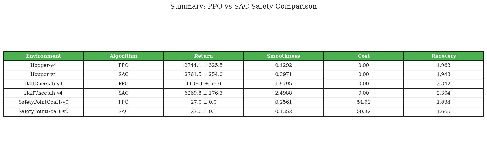
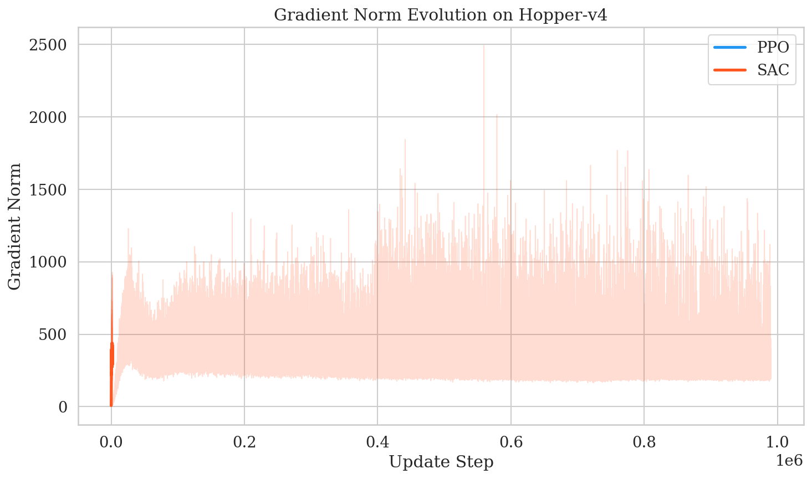

SafetyPointGoal1 Constraint ViolationsSafetyPointGoal1-v0: Violations & Feasibility

Reward-Safety TradeoffReward vs Safety Tradeoff

Action Smoothness ComparisonAction Smoothness (lower = smoother policy)

Seed Variance ComparisonReturn Distribution Across Seeds

Perturbation Recovery ComparisonRecovery Ratio After State Perturbation (1.0 = perfect)

Summary TableAll values: mean ± standard error across 10 seeds. Smoothness = lower is better. Recovery = closer to 1.0 is better.

Gradient Norm EvolutionGradient Norms: PPO vs SAC
In which conditions will PPO have more stable and safer behavior compared to SAC?
When deploying RL in safety-critical applications, algorithm choice should be guided by stability and safety metrics — not just cumulative reward. PPO's conservative updates offer a natural advantage for deployment safety.
Code available at: github.com/team-repo
Reproducible experiments with deterministic seeding